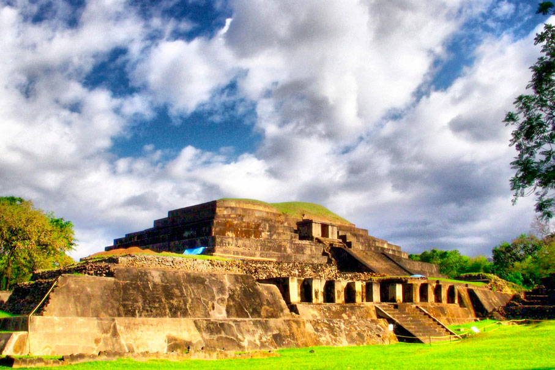

Asentamiento maya habitado entre los años 100 y 1200 d.c, famoso por albergar la pirámide más alta de El Salvador con 24 metros de altura.
El Tazumal de El Salvador; está ubicada en el corazón de Chalchuapa, en el departamento de Santa Ana a ochenta kilómetros al occidente de la capital. Esta zona está dentro del área arqueológica de Chalchuapa, cuya superficie aproximada es de 10 km² y donde también se localizan los sitios arqueológicos de Pampe, Casa Blanca, El Trapiche y Las Victorias. Chalchuapa fue un sitio adonde llegó la influencia de Copán, y la influencia teotihuacana y tolteca.
Antiguamente El Tazumal era habitado por los POKOMAMES, los que se distinguieron por la fabricación de objetos de barro y además por la famosa Cerámica Policromada a base de rojo y negro, siendo esta una de las de primera calidad. Estos indios pertenecieron a la familia de los MAYA QUICHE o MAYANCES.
El Tazumal se considera como la ciudad más grande de origen Maya, ya que está en un área donde se encuentran los lugares arqueológicos de Trapiche, Casa Blanca, Las Victorias, Tazumal y Pampe; además existe un lago de origen volcánico el cual tiene el nombre de Cuzcachapa, que se encuentra a unos 300 metros de las Ruinas de El Tazumal, al noreste. Es muy común que los habitantes de esta región encuentren con facilidad objetos antiguos ya sea en cerámica o en jade.
Se considera que el origen de la Pirámide más grande es Maya Azteca por la arquitectura, tomando en cuenta las escaleras y los perfiles que se localizan en todas direcciones y además la estructura que se encuentra hacia el Occidente sobre la Pirámide que semeja un observatorio o Pulpito en forma de cuadro, el que se cree que era el que servía de lugar especial cuando se llegaba a la época de los sacrificios destinados a algunos de los dioses tales como: Dios del Fuego, Dios del Agua, Dios del Sol, Dios de la Luna. Los cuales algunas veces eran reconocidos por deidades tales como: Dios de la Cosecha, Dios de la Fertilidad, dios de la Guerra, etc.